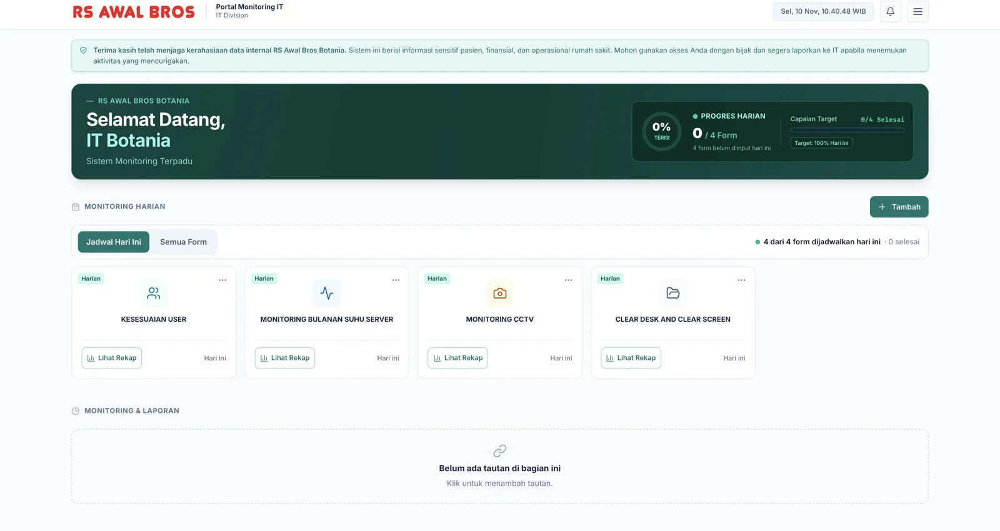
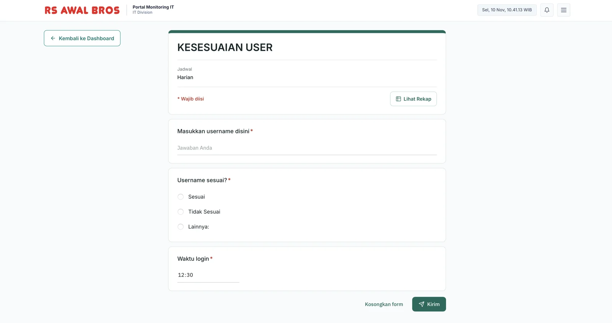
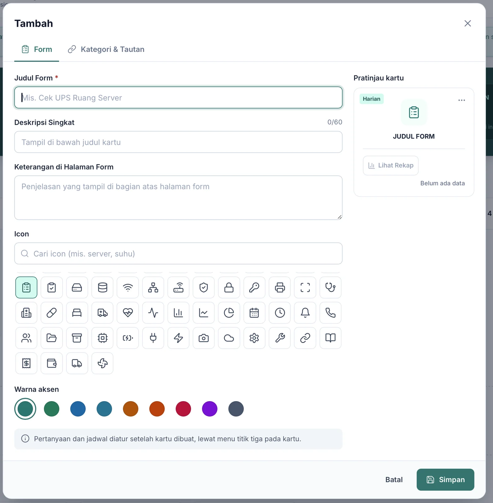
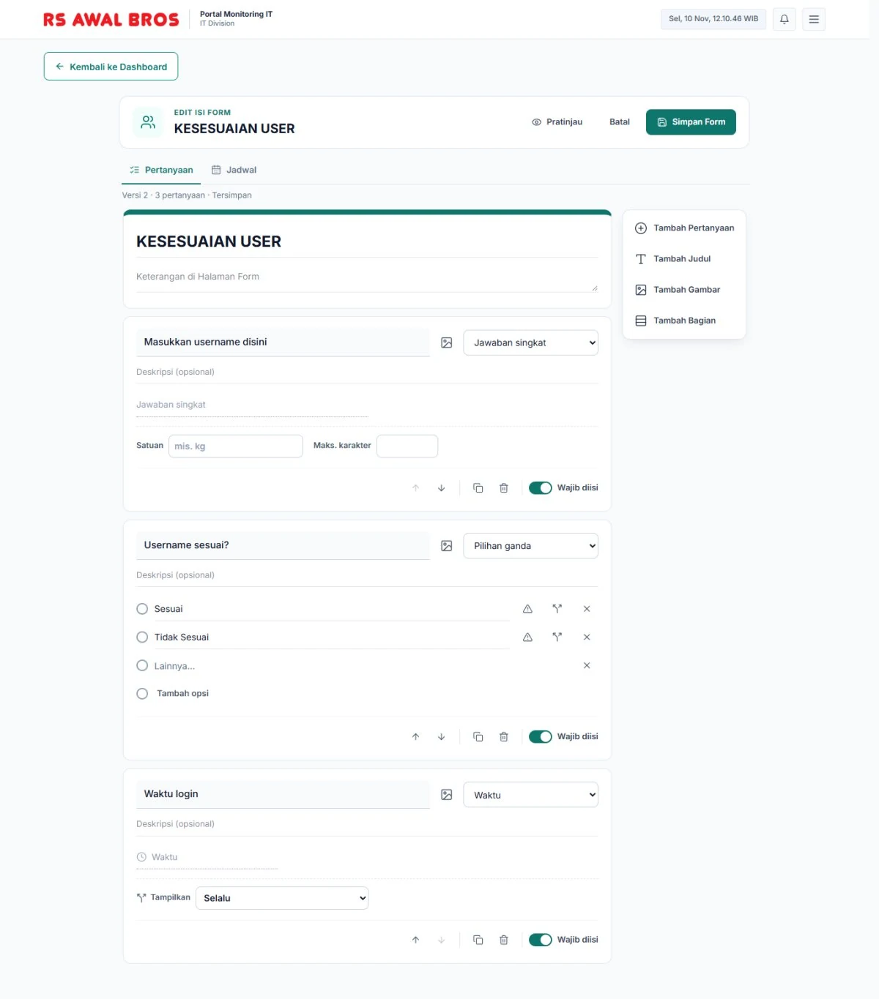
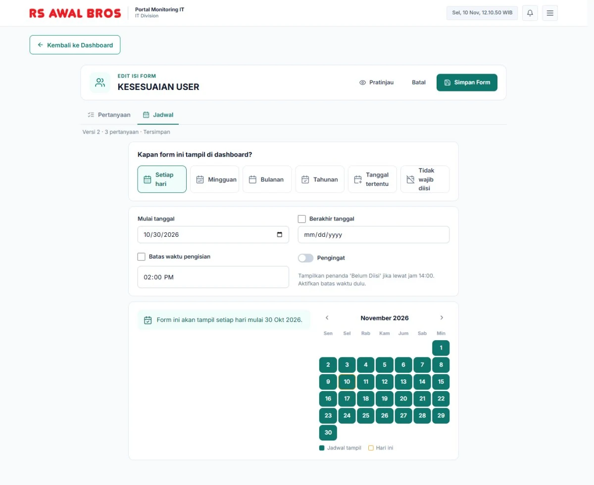
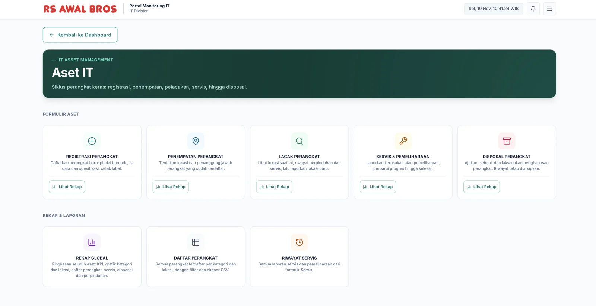
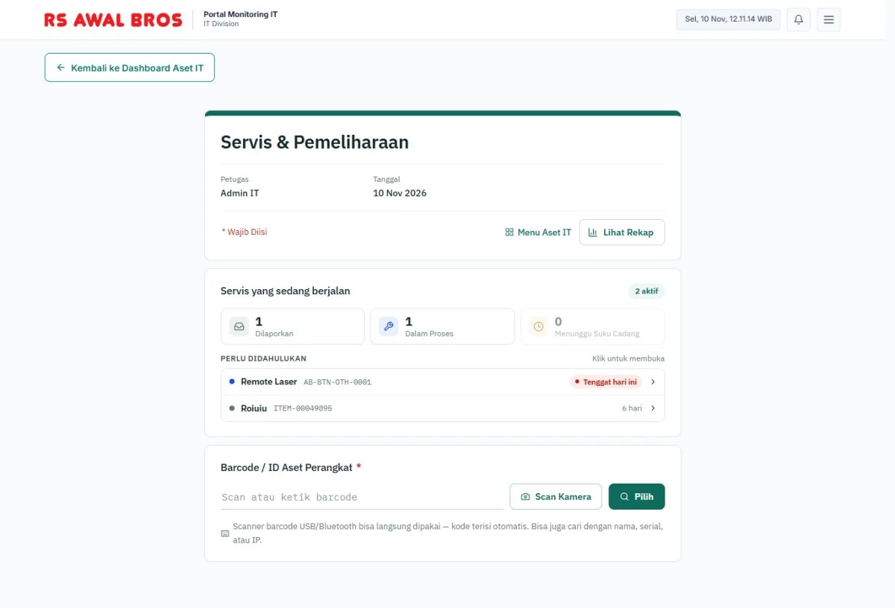

Daily IT checks used to mean opening too many separate links and filling each one in. AB-Portal puts them all in one place, so the routine takes less time and less work.
Year
2026
Client
IT unit, RS Awal Bros Botania
Role
UI/UX design, from scratch
Status
Used by the IT team
portal-monitoring-it / dashboard

26
pages, all designed by me
9
question types in the form builder
5
steps in a device's life, tracked
H-1
email before a vendor repair is due
Too many links, every single day
Before AB-Portal, the daily checks were spread across a pile of separate links, each one to open and fill in on its own. It was slow and easy to lose track of. So we pulled everything into one portal.
The IT team runs the same routine checks every day: are user accounts right, is the server room too warm, are the CCTV cameras up, did people leave their desks and screens clean. AB-Portal puts each check on a card. Open it, fill a short form, send. Every report gets its own number, like F30-202611-0003.
The ring at the top shows how many of today's forms are filled, so nobody has to ask "did someone already check the server room?" If an answer looks wrong (say, a user that doesn't match), it lands in a Needs attention list and the bell icon lights up.
/forms/kesesuaian-user

A check is just a short form. This one confirms user accounts.

New check? The team adds it themselves: title, icon, colour, with a live preview.
Forms the team builds themselves
New checks can be added straight from the portal, no code changes needed. It has its own form builder, a bit like Google Forms: nine question types, photo uploads, follow-up questions that only appear for certain answers, and a small warning icon to mark which answers "need attention".
Each form also gets a schedule: daily, weekly, monthly, yearly or on set dates, with an optional deadline that flags it as "not filled yet". Every save creates a new version, so old reports keep the questions they were answered with.
/form-editor · questions

The editor: question types, required toggle, and per-option “needs attention” and follow-up icons.
/form-editor · schedule

The schedule tab, with a calendar that previews which days the form shows up.
And every device, from day one to disposal
The second half tracks the hospital's IT hardware through its whole life. Every device is found by its barcode, scanned with a USB or Bluetooth scanner or the phone camera. No barcode? The portal makes one, like AB-BTN-OTH-0001, ready to print.
01
Register
Scan barcode, print label
02
Place
Location and owner
03
Track
Where it is, where it's been
04
Service
Track repairs, email H-1 before vendor deadline
05
Dispose
Approved, history kept
/aset-it

Each step is its own form, with recaps and a CSV export of the full device list.

Nothing slips past the vendor deadline
Repairs move through Reported, In progress, Waiting for parts and Done. The ones due soonest float to the top, and the portal emails a reminder the day before a vendor deadline.
Behind all of it, every action is written to a read-only activity log: who logged in, who changed which report, and why it was deleted.
My part
I designed AB-Portal from scratch, all 26 pages: how the daily checks are organised into cards, the form builder and its schedule, and the whole asset flow from barcode to disposal.